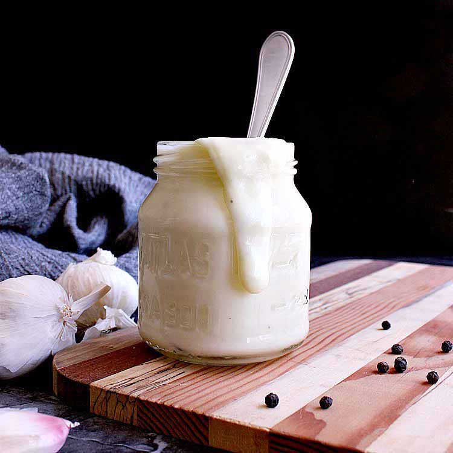

alfredo sauce

Description
This recipe came together after many different attempts at alfredo sauce
with many of them resulting in either runny sauce or parmesan soup.
This twist on alfredo can not get any better.
Ingredients
- Butter
- Heavy whipping cream
- Parmesan cheese
- Black pepper
- Garlic powder or minced garlic
- Paprika
- Cumin
- Italian seasoning
- Sun-dried tomatoes
Steps
- To a medium hot pan, add the butter until melted
- Add heavy whipping cream and wait until barely simmering
- Add all the seasonings, making sure to exclude the parmesan cheese and
sundried tomatoes
- Wisk ingredients until thoroughly combined and bring back to a simmer
- Once simmering, reduce the heat and add parmesan cheese, making sure to
wisk away any clumps
- Once simmering again, add sundried tomatoes and lower heat to
low, and allow to thicken
- Once thickened to likened consistency (typically until coating
the back of a spoon) turn off heat and serve over desired pasta
Return to homepage
Next recipe: Basil Pesto